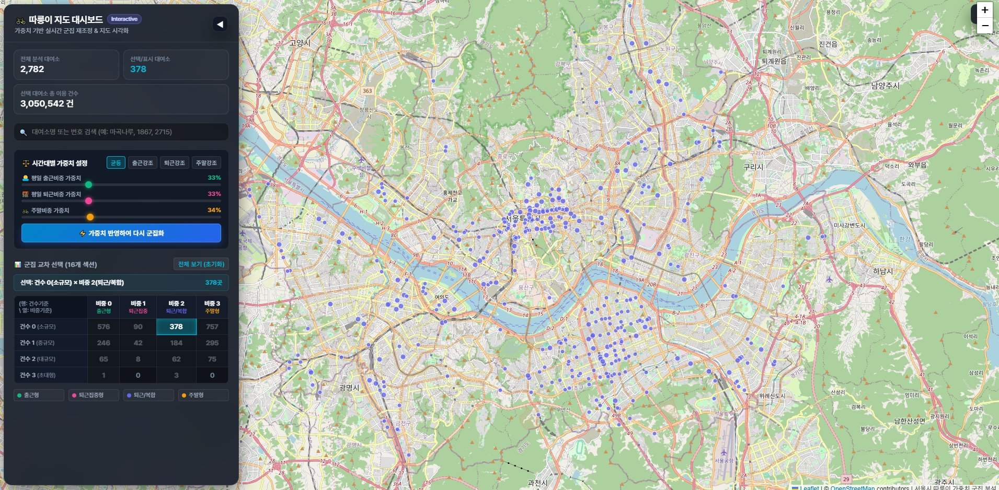
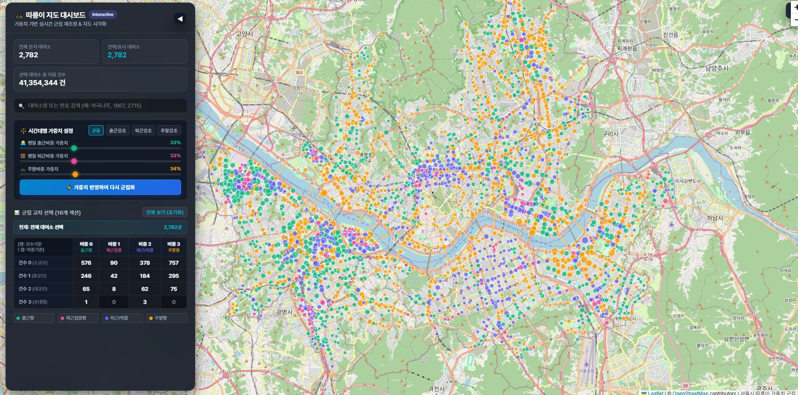
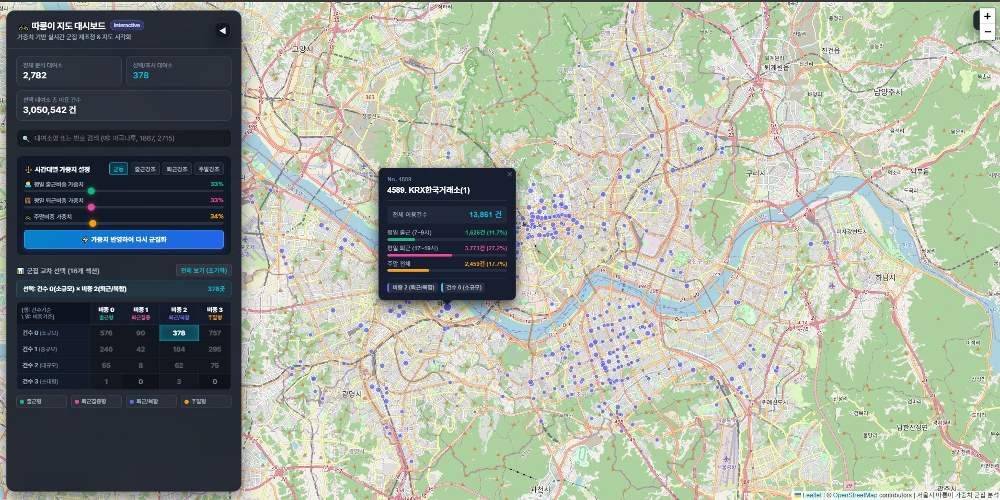
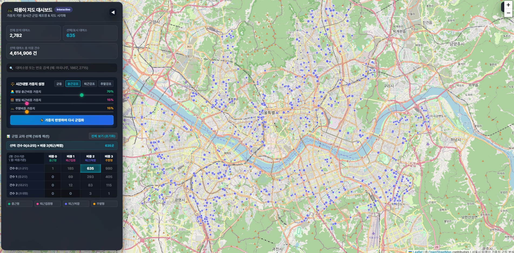
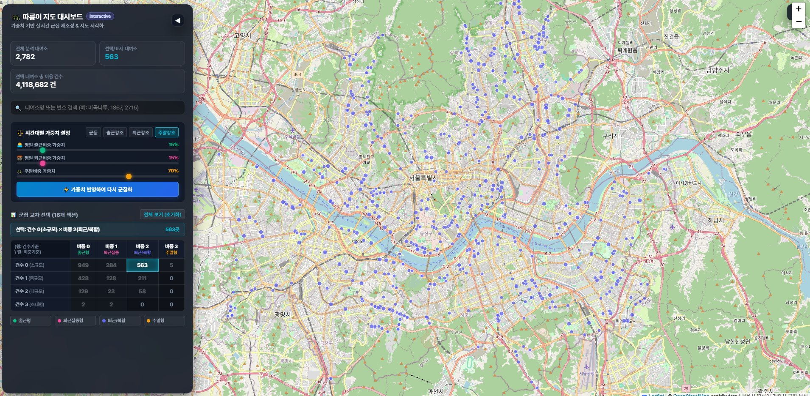

출근·퇴근·주말에 실제 처리되는 이용량이 비슷한 대여소를 묶습니다. 운영 인력, 재배치 물량, 거치대 규모를 검토할 때 유용합니다.
ONE DATA, TWO QUESTIONS
같은 데이터도 질문이 다르면 그룹이 달라집니다
서울시 따릉이 대여소를 예로 들면 이용건수는 운영 규모를 보여주고, 이용비중은 이용이 집중되는 시간대를 보여줍니다. 같은 KMeans를 쓰더라도 어떤 변수를 넣었는지에 따라 군집의 의미가 달라집니다.
전체 규모와 관계없이 출근·퇴근·주말 구성비가 비슷한 대여소를 묶습니다. 시간대별 이용 패턴을 이해할 때 유용합니다.
규모와 패턴을 교차하면 같은 이용량 안에서도 서로 다른 운영 유형을 발견할 수 있습니다.
먼저 확인할 질문: 어떤 알고리즘을 사용했는가보다 어떤 변수를 기준으로 가까움을 계산했는가를 먼저 봐야 합니다.
4 × 4 CROSS SEGMENT
두 군집을 교차하면 세부 운영 유형이 보입니다
건수군집 4개와 비중군집 4개를 교차하면 최대 16개의 조합을 탐색할 수 있습니다. 이것은 KMeans로 16개 군집을 다시 학습한 결과가 아닙니다. 서로 다른 두 분석 관점을 결합한 교차 세그먼트입니다.

규모와 출근 패턴이용량이 많으면서 출근시간에 집중되는 대여소는 어디에 있을까요?
작지만 뚜렷한 패턴전체 이용량은 적지만 주말 비중이 높은 대여소는 어디에 있을까요?
같은 규모, 다른 시간이용 규모는 비슷하지만 시간대별 패턴이 다른 대여소는 어디일까요?
공간적 분포같은 교차 세그먼트의 대여소가 특정 지역에 모여 있을까요?
군집 번호는 이름이 아닙니다. 건수군집 0과 비중군집 0은 번호가 같아도 같은 의미가 아닙니다. 각 군집의 원래 단위 평균을 확인한 뒤 의미를 붙여야 합니다.
FROM TABLE TO PLACE
표에서 발견한 차이를 지도에서 확인합니다
교차표는 유형별 대여소 수와 평균을 비교하기 좋습니다. 그러나 운영 판단을 하려면 대여소가 실제로 어디에 있는지도 봐야 합니다. 지도는 군집이 상권, 주거지역, 환승 거점 주변에 어떻게 분포하는지 확인하게 해줍니다.


| 표가 잘 보여주는 것 | 군집별 대여소 수, 평균값, 교차 조합의 크기와 차이 |
|---|---|
| 지도가 잘 보여주는 것 | 대여소의 실제 위치, 밀집 지역, 주변 공간과의 관계 |
| 함께 확인할 것 | 숫자로 발견한 특징이 실제 공간에서도 설명 가능한지, 위치가 결과의 원인을 증명하는 것처럼 과도하게 해석하지 않았는지 |
CONTROL THE ASSUMPTION
대시보드는 정답판이 아니라 실험 도구입니다
담당자는 업무 목적에 따라 출근·퇴근·주말의 중요도를 바꾸고 군집을 다시 계산할 수 있습니다. 화면의 숫자만 바뀌는 것이 아니라, 변경된 기준이 표준화된 거리 계산과 KMeans 재실행에 연결되어야 합니다.
균등 기준
출근 33%퇴근 33%주말 34%
→
업무 목적에 맞춘 기준
출근 강조퇴근 강조주말 강조
출근 가중치를 높인다는 뜻: 출근형 대여소에 보너스 점수를 주는 것이 아닙니다. 대여소 사이의 거리를 계산할 때 출근비중의 차이를 더 중요하게 보겠다는 의미입니다.


- 가중치 변경 전·후의 군집별 대여소 수를 비교합니다.
- 재배치된 대여소와 지도 분포 변화를 확인합니다.
- 가중치를 바꾼 결과가 더 옳다고 단정하지 않습니다.
- 업무 목적에 맞는 기준인지 현장 정보와 함께 검토합니다.
DECISION OWNERSHIP
마지막 판단은 담당자가 직접 해야 합니다
담당자가 모든 코드를 직접 작성해야 한다는 뜻은 아닙니다. AI의 도움을 받아 분석과 화면을 빠르게 만들 수 있습니다. 다만 질문을 정하고, 기준을 조정하고, 결과를 검증하고, 실제 행동을 결정하는 일은 현장을 아는 담당자의 몫입니다.
문제를 정합니다운영 규모를 볼지, 시간대 패턴을 볼지, 어떤 의사결정에 쓸지 정합니다.
기준을 선택합니다분석 변수, 군집 수, 가중치가 업무 목적과 맞는지 결정합니다.
결과를 검증합니다평균표와 지도, 현장 경험을 함께 보고 설명되지 않는 결과를 찾습니다.
행동으로 연결합니다재배치, 시설 점검, 집중 관리처럼 실제 운영에 적용할 항목을 선택합니다.
PILOT BEFORE PLATFORM
큰 시스템보다 작은 의사결정 도구부터 시작합니다
처음부터 큰 비용을 들여 정식 시스템을 구축하기보다 실제 데이터와 핵심 기능으로 파일럿을 만들고 담당자가 직접 사용해 보세요. 반복해서 쓰는 기능과 필요한 통제가 확인된 뒤 시스템화를 결정해도 늦지 않습니다.
1. 실제 데이터업무에서 쓰는 데이터로 시작
2. 작은 도구핵심 질문만 확인하는 대시보드
3. 직접 사용담당자가 기준을 바꾸며 검증
4. 효과 확인필요한 기능과 불필요한 기능 구분
5. 선택적 확장검증된 부분만 정식 시스템화
파일럿과 운영 시스템은 역할이 다릅니다. 다수 사용자의 권한 관리, 개인정보 보호, 대규모 트래픽, 장애 대응이 필요하다면 검증된 파일럿을 바탕으로 정식 개발 범위를 설계해야 합니다.
AI로 빠르게 만들고, 담당자가 직접 판단하세요.
데이터공방은 데이터 분석, AI 활용, 조정 가능한 대시보드 제작을 하나의 실무 흐름으로 교육합니다.